Трёхжды рождённый: история Оренбурга
Оренбург — город-крепость, который закладывали трижды. Первая попытка была предпринята в 1735 году у места впадения реки Орь в Яик (ныне Урал). Именно от названия реки Орь и произошло имя города — «Оренбург», что означает «город на Ори».
Вторая попытка основания города произошла в 1737 году в урочище Красная Гора, однако место признали неудачным из-за частых наводнений и отсутствия хороших пастбищ. Город простоял там всего несколько лет.
И только в 1743 году город окончательно перенесли на то место, где он находится сегодня — на высоком правом берегу Урала. Оренбургская крепость стала самой мощной на всей юго-восточной границе Российской империи. Её стены помнят посольства из Хивы, Бухары, Кашгара и далёкого Китая.
В XIX веке Оренбург стал важнейшим центром торговли с Азией. Через город шли караваны с чаем, шёлком, хлопком и пряностями. В 1869 году здесь открылся знаменитый Оренбургский пуховязальный промысел, который прославил город на весь мир.
В XX веке Оренбург (в 1938–1957 годах город назывался Чкалов) стал индустриальным центром. Здесь работали крупные заводы, а в 1955 году было открыто Оренбургское газоконденсатное месторождение, сделавшее город одним из энергетических центров страны.
Главные достопримечательности
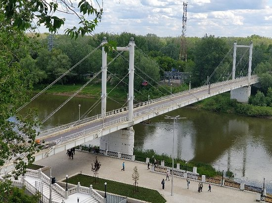
Мост Европа — Азия
Пешеходный мост через реку Урал. Именно здесь проходит условная граница между Европой и Азией. Туристы часто приезжают сюда, чтобы постоять одной ногой в Европе, другой — в Азии. Мост длиной 220 метров был построен в 1982 году и стал одним из главных символов Оренбурга.
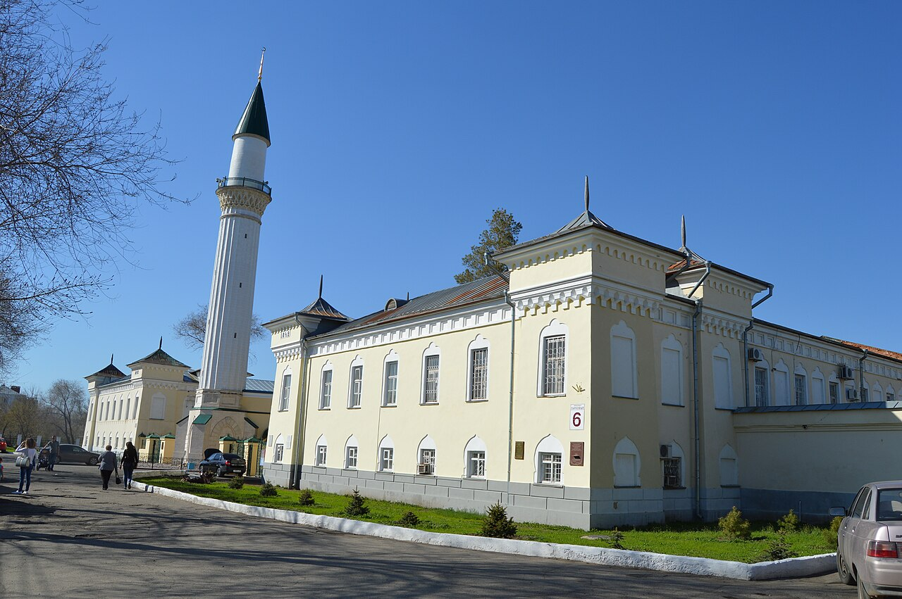
Караван-Сарай
Уникальный архитектурный ансамбль XIX века, построенный в 1837–1846 годах в мавританском стиле. Комплекс включает мечеть, минарет, медресе и гостиный двор. Караван-Сарай был подарком императора Николая I башкирскому кантону и стал символом дружбы народов.
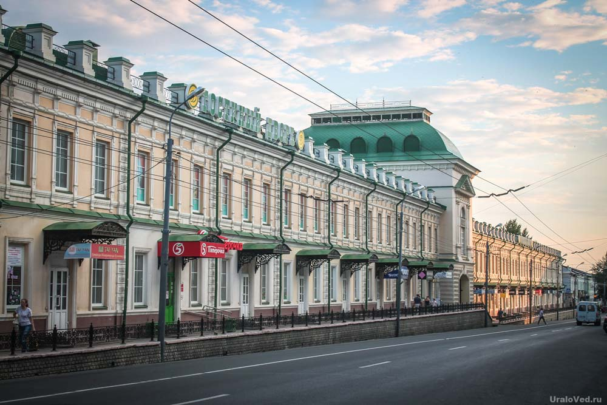
Гостиный двор
Старейший торговый комплекс России, основанный в 1750-х годах. Здание было восстановлено в 1990-х годах. Сегодня здесь располагается музей истории Оренбурга, сувенирные лавки, где можно купить знаменитые оренбургские пуховые платки.
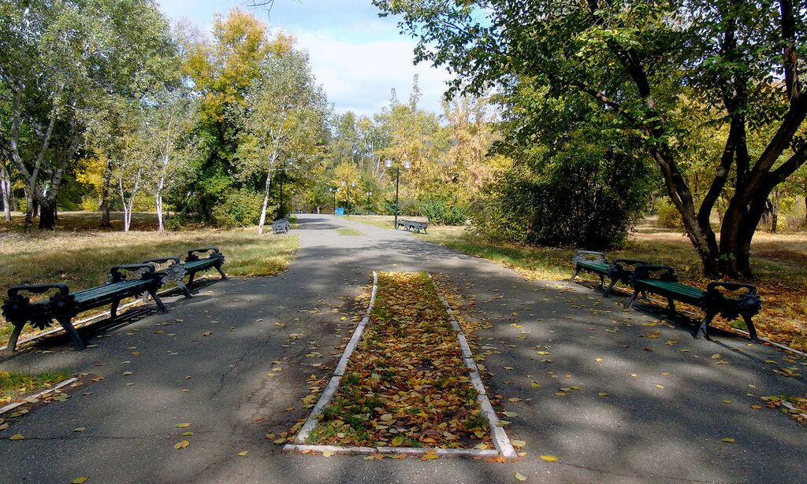
Беловка (Зауральная роща)
Живописный парк на левом берегу Урала. Здесь растут вековые дубы и сосны, бьют родники с чистейшей водой. Зимой Беловка становится центром лыжного спорта. Летом это излюбленное место для прогулок и пикников.
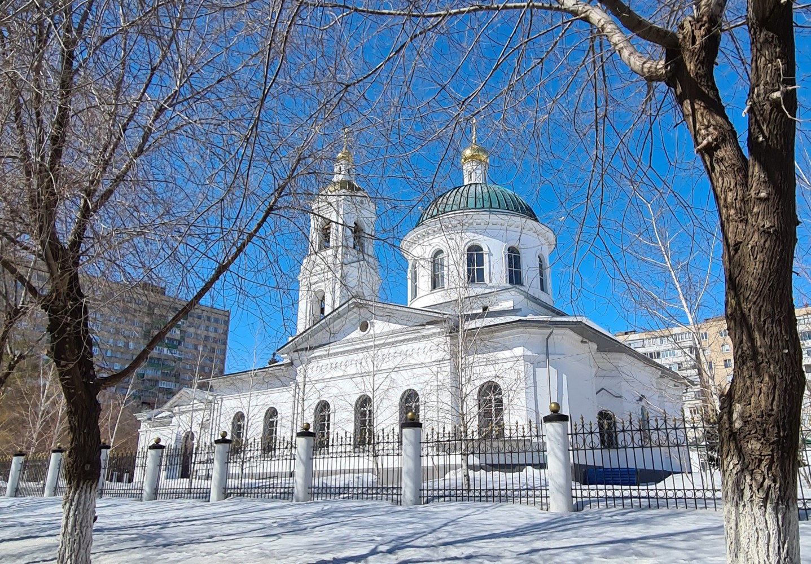
Никольский кафедральный собор
Главный православный храм Оренбурга, построенный в 1886 году в византийско-русском стиле. Пятикупольный собор с 37-метровой колокольней — одно из красивейших зданий города. Здесь хранится чудотворная икона Табынской Божьей Матери.
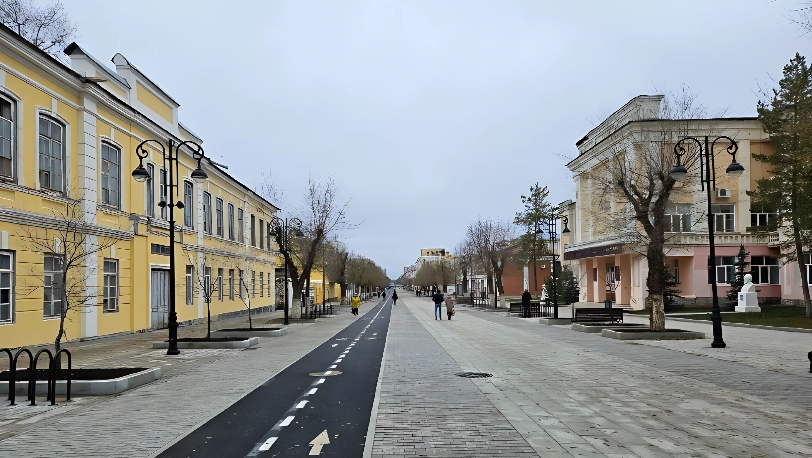
Улица Советская
Главная пешеходная артерия Оренбурга. Здесь сохранились купеческие особняки XIX века, памятники архитектуры, фонтаны, уютные кафе и магазины. Прогулка по Советской погружает в атмосферу старого Оренбурга.
Люди, прославившие Оренбург
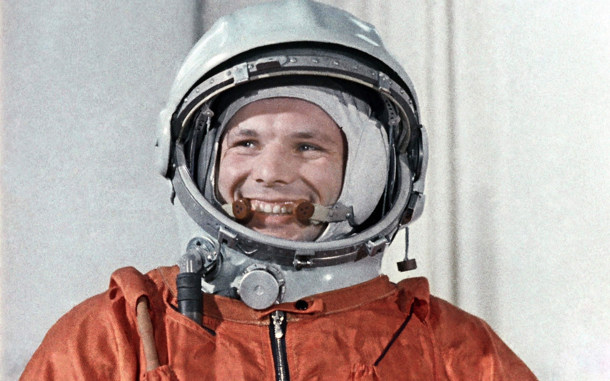
Юрий Гагарин
Первый космонавт Земли учился в Оренбургском высшем военном авиационном училище лётчиков в 1955–1957 годах. Именно здесь, в Оренбурге, Гагарин совершил свой первый самостоятельный полёт на самолёте МиГ-15. В городе установлен памятник Гагарину.
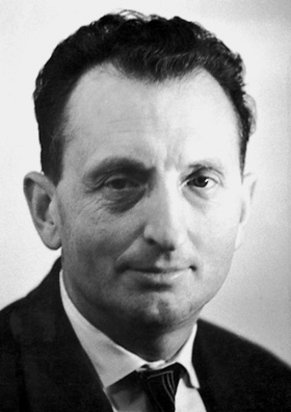
Александр Прохоров
Выдающийся советский физик, лауреат Нобелевской премии 1964 года за создание лазера. Александр Михайлович родился в Оренбурге в 1916 году. Его имя носит одна из улиц города.
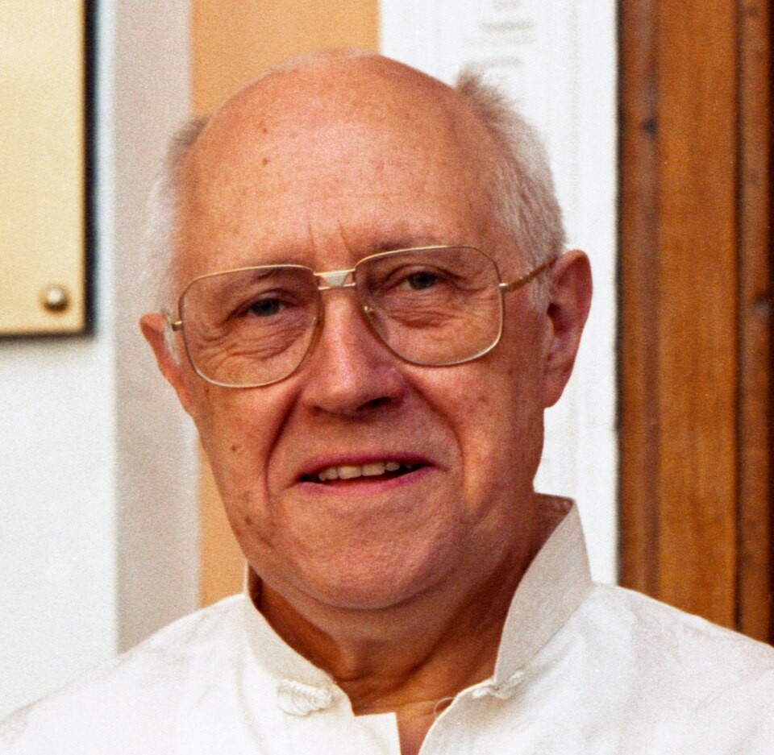
Мстислав Ростропович
Великий виолончелист и дирижёр, народный артист СССР. Родился в Оренбурге в 1927 году. В Оренбурге ежегодно проходит фестиваль классической музыки «Ростропович. Лица и голоса».
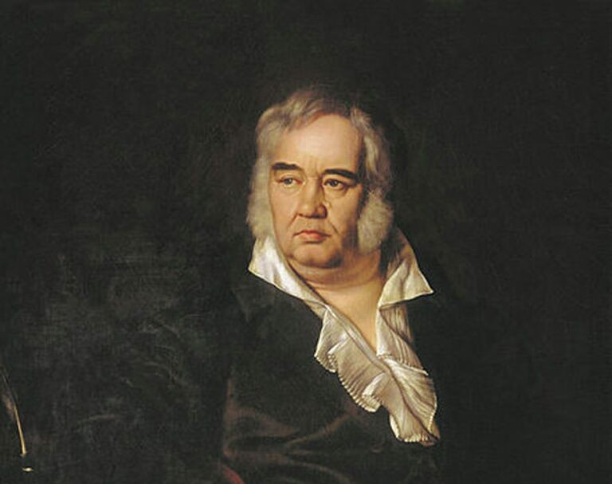
Иван Крылов
Великий русский баснописец в 1785–1788 годах служил в Оренбурге чиновником. Именно здесь он написал свои первые басни и комедии. В Оренбурге есть сквер имени Крылова.
Оренбургский пуховый платок — символ России
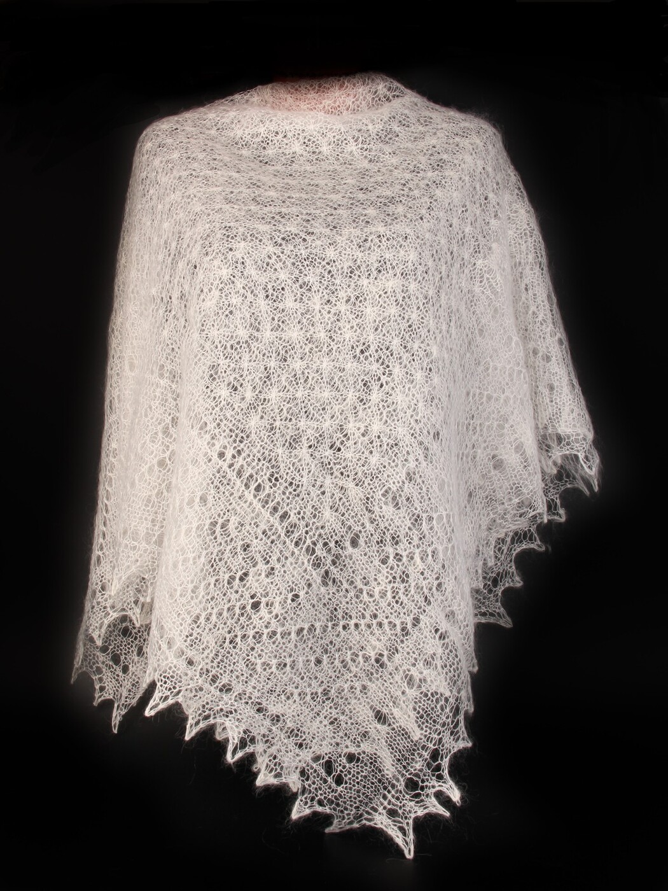
Оренбургский пуховый платок
Оренбургский пух — самый тонкий в мире, его толщина составляет всего 16–18 микрон. Паутинка — тончайший платок — весит 60–80 граммов и свободно проходит сквозь обручальное кольцо.
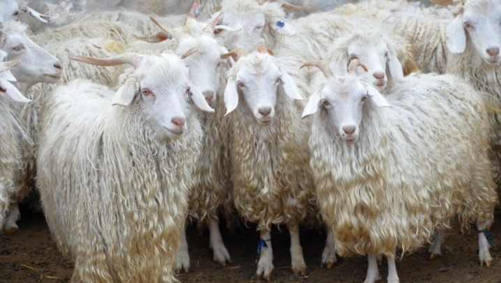
Оренбургская коза
Уникальная порода коз была выведена в Оренбургской губернии в XIX веке. Только у этих коз пух такой тонкий, прочный и тёплый.
Карта достопримечательностей Оренбурга
На карте отмечены основные достопримечательности города. Нажмите на маркер, чтобы увидеть подробную информацию. Названия достопримечательностей подписаны прямо на карте.
Данные карты предоставлены проектом OpenStreetMap. Вы можете приближать и отдалять карту, нажимать на маркеры для получения подробной информации.